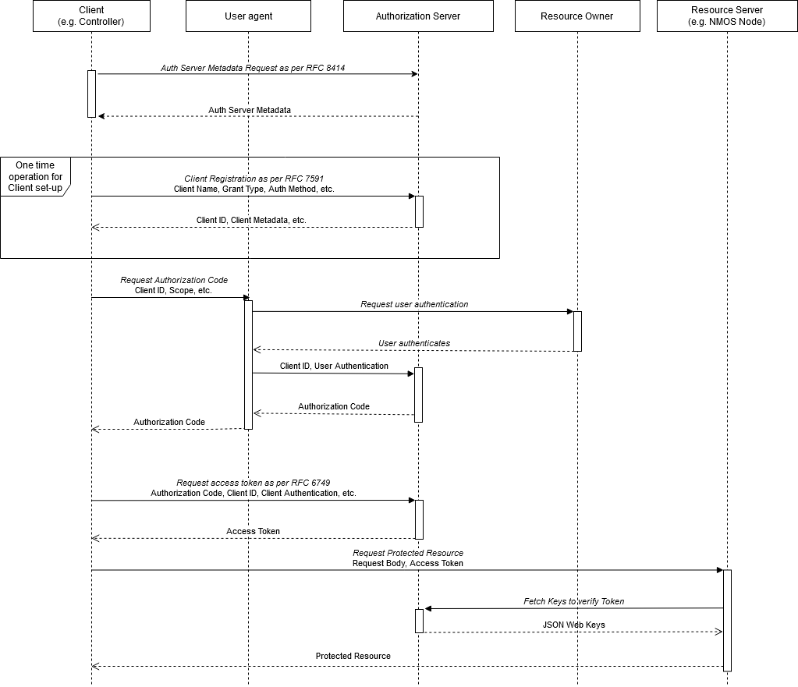
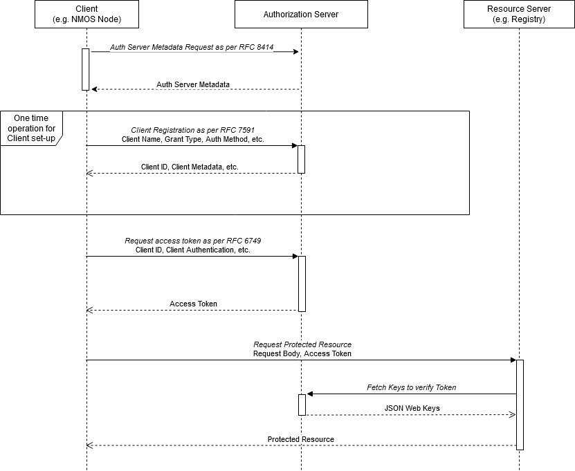

APIs
(c) AMWA 2019, CC Attribution-NoDerivatives 4.0 International (CC BY-ND 4.0)
This document covers common aspects of the following API, and how other AMWA NMOS APIs and their clients interact with it: * Authorization API
The Authorization API specified above is one valid implementation, but does not define how every Authorization Server will present itself. Any OAuth 2.0 compatible Authorization Server which implements the RFCs noted in the Overview is compatible with this authorization mechanism.
API Specifications
The Authorization API is specified using: * The following sub-sections describing the API and its associated IETF RFCs. * Example RAML documents and JSON schemas in the APIs folder. * Examples of JSON format output are provided in the examples folder.
The Authorization Server SHALL present an instance of the NMOS Authorization API. The
API MAY use alternative paths for all endpoints other than those beginning with .well-known, provided the alternative
paths are correctly signalled via OAuth 2.0 Authorization Server Metadata RFC 8414.
The Authorization Server and client authentication methods MUST otherwise be implemented as per the OAuth 2.0 Authorization Framework RFC 6749. All Access Tokens produced by the Authorization Server MUST be Bearer Tokens using the JSON Web Token (JWT) format as per RFC 7519.
API Paths
The Authorization Server MUST have have an "issuer identifier" URL, as defined by RFC 8414. This MAY follow the path structure defined by other NMOS specifications, but this is not mandatory:
https://<ip address or hostname>:<port>/x-nmos/auth/<api version>/
Any path component of the issuer identifier (omitting the initial / and any trailing /) is advertised via the DNS-SD
api_selector TXT record, as described in Discovery. In this example, it would be
x-nmos/auth/<api version>.
The issuer identifier MAY be used as the base of the Authorization API, but this is not mandatory. The server identifies the paths for its Authorization API endpoints as follows.
Server Metadata Endpoint
The Authorization Server MUST implement an endpoint at the following path. This path immediately follows the port and MUST NOT be prefixed by any additional path, including but not limited to 'x-nmos'. This endpoint cannot follow the usual format of NMOS APIs since it MUST follow the syntax and semantics of ".well-known" endpoints defined in RFC 5785.
- /.well-known/oauth-authorization-server[/
] - This path MUST return a response matching the requirements of OAuth 2.0 Authorization Server Metadata RFC 8414. This MUST include the optionaljwks_uriandregistration_endpointparameters. Therevocation_endpointSHOULD be supported.
Authorization Endpoints
The following endpoints MUST be implemented by an Authorization Server at the paths signaled in the Authorization Server Metadata.
- The
authorization_endpoint, for example at /authorize - Used for requesting an authorization code when using the authorization code grant, as defined by RFC 6749. - The
token_endpoint, for example at /token - Used for requesting a token when using any of the chosen grant types, as defined by RFC 6749. - When included in the Server Metadata, the
revocation_endpoint, for example at /revoke - Used as the revocation endpoint for revoking currently active access tokens or refresh tokens, as defined by RFC 7009. - The
jwks_uriendpoint, for example at /jwks - Used to expose a JSON Web Key Set RFC 7517 containing the public key that corresponds with the private key used to sign the Access Tokens. - The
registration_endpoint, for example at /register - Used for the manual or dynamic registration of an OAuth 2.0 client with the Authorization Server in line with RFC 7591.
API Interaction
The following diagrams highlight the different sequences of interactions that occur when accessing a Protected Resource depending on the OAuth 2.0 grant type used.
Authorization Code Grant Flow
This flow can be used for any NMOS interaction.

Client Credentials Grant Flow
This flow can only be used in specific interactions. Refer to BCP-003-02 for permitted uses of this grant.

API Validation
JSON schemas are included with the RAML API definitions. These include validation for values used within the APIs. These are based on the schemas defined in the OAuth 2.0 Specification. It is RECOMMENDED that implementers of the Authorization API use these JSON schemas as part of a validation stage when passing client registration data to, or receiving client and token data from, the Authorization Server.
Content Types
All API endpoints returning a JSON response MUST provide a JSON representation signalled via Content-Type:
application/json headers. This SHOULD be the default content type in the absence of any requested alternative by
clients. Other content types (such as HTML) are permitted if they are explicitly requested via Accept headers.
For HTTP redirections, such as when using the Authorization Code grant, a Content-Type of text/html MAY also be
returned.
Cache-Control
The authorization server MUST include the HTTP "Cache-Control" response header field with a value of "no-store" in any response containing tokens, credentials, or other sensitive information, as well as the "Pragma" response header field with a value of "no-cache", in line with RFC 6749.
Redirections
Some of the standard grants used within the OAuth 2.0 framework make use of user-agent redirection (e.g. via a web-browser) in order to gain user authorization. The primary grant that makes use of redirection is the Authorization Code grant. As such, clients performing requests using this method MUST correctly handle a 302 response (Found) as stated in Section 4.1.2 of RFC 6749 following the guidelines given in RFC 7231.
The Authorization Server MUST NOT use the 307 HTTP status code for redirection as per Section 4.10. of the OAuth 2.0 Best Common Practice draft.
OPTIONS Requests
OAuth 2.0 Clients MUST support pre-flight OPTIONS requests when performing all HTTP requests, including GET requests,
as the presence of the Authorization HTTP header used to send the Access Token creates a "non-simple" request, in
line with the W3C's Cross-Origin Resource Sharing specification.
OPTIONS requests MUST NOT require authorization, such as the presence of an Access Token inside the Authorization
header.
The Authorization Server and Resource Servers MUST correctly reply to OPTIONS requests across all API endpoints,
explicitly permitting the use of the Authorization header inside the Access-Control-Allow-Headers field.
Error Codes & Responses
The NMOS APIs use HTTP status codes to indicate success, failure and other cases to clients as per RFC 7231 and related standards.
Authorization Servers MUST return error codes and responses in line with Section 5.2. of RFC 6749. OAuth 2.0 Clients MUST be capable of handling such responses.
Resource Servers MUST return error codes and responses in line with Section 3 of RFC 6750. OAuth 2.0 Clients MUST be capable of handling such responses.
Further details on when Resource Servers will respond with particular codes is covered in Resource Servers - Accessing Protected Resources.
Where the RAML specification of an API specifies explicit response codes it is expected that a client will handle these cases in a particular way. As explicit handling of every possible HTTP response code is not expected, clients must instead implement more generic handling for ranges of response codes (1xx, 2xx, 3xx, 4xx and 5xx).